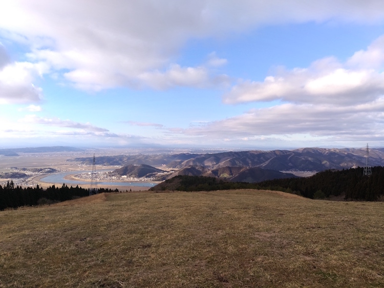
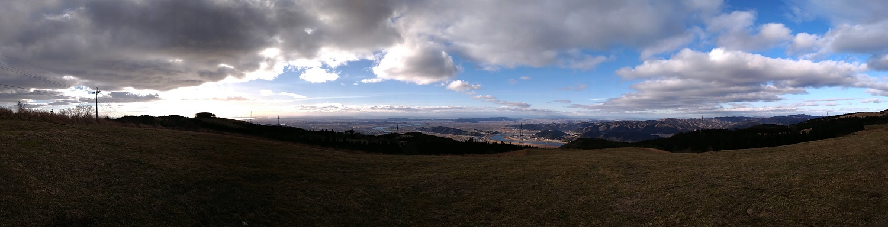
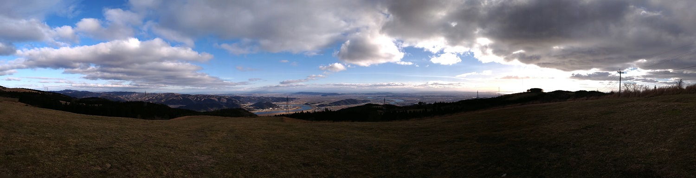

上品山

上品山（じょうぼんさん）の頂上付近には石巻市営河北上品山牧場、国土交通省航空路監視レーダーや、久集比奈神社など様々な施設があり、 周辺の山々を結ぶ全長20キロの遊歩道である石巻緑のハイキングロードもあります。
- 
- 
上品山（じょうぼんさん）の頂上付近には石巻市営河北上品山牧場、国土交通省航空路監視レーダーや、久集比奈神社など様々な施設があり、 周辺の山々を結ぶ全長20キロの遊歩道である石巻緑のハイキングロードもあります。